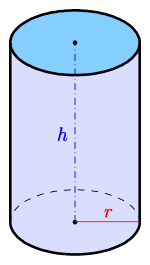

Estructura Secuencial
Geométricos
- Determinar la hipotenusa de un triángulo rectángulo conocidas las longitudes de los catetos.
- Elabore un algoritmo que calcule el área de un rectángulo.
- Realice un algoritmo para calcular el perímetro y área de un Rectángulo un Cuadrado.
- Elabore un algoritmo que calcule el área de un circulo.
- Escribir un algoritmo que calcule la longitud y el área de una circunferencia:
- Longitud de la circunferencia =
2 × PI × radio - Área de la circunferencia =
PI × radio2
- Longitud de la circunferencia =
- Confeccione un algoritmo para calcular el volumen de un cilindro circular recto.
VC = PI × r ^ 2 × h

Lógicos
- Escribir un algoritmo que reciba dos variables enteras e intercambie sus valores. Se deben mostrar los valores que tienen finalmente las variables.
- Elaborar un algoritmo que solicite un número de 2 cifras y que muestre el número de unidades y decenas que lo componen.
- Desarrollar un algoritmo que permita invertir un número de 3 cifras. Por ejemplo, invertir a
492da como resultado294. - Para un número
Nde 5 cifras y un valorKentre 2 y 5, reemplazar enNel dígitoKpor 0.- Ejemplo 1: Para
N = 32415yK = 3, se debe obtener32015. - Ejemplo 2: Para
N = 32415yK = 5, se debe obtener32410.
- Ejemplo 1: Para
Operaciones
- Diseñar un algoritmo que lea un entero, duplicarlo y visualizar el resultado.
- Elabore un algoritmo que pide al usuario un número y de este muestre: el sucesor, el antecesor, el cuadrado y la raíz cuadrada.
- Realice un algoritmo donde pida al usuario dos números y muestre su: suma, resta, multiplicación y división.
- Escribir un algoritmo que pida dos números enteros y muestre el cociente y el resto de la división entera entre ambos.
- Diseñar un algoritmo que permita leer cuatro números, calcule el promedio de los cuatro y muestre el resultado.
Combinados
- Precio del estacionamiento (conversión y por cada): Realice un algoritmo para calcular lo que debe pagar un cliente en un estacionamiento, sabiendo que se paga
$85la hora. Se debe conocer el tiempo de estacionamiento en horas y minutos. - Backup en CDs (conversión y por cada): Elaborar un algoritmo que permita calcular el número de CDs necesarios para hacer una copia de seguridad, de la información almacenada en un disco cuya capacidad se conoce. Nota: un CD tiene
700 MB. UnGB = 1024 MB. - Velocidad del proyectil (conversión y formulación): Escribir un algoritmo que calcule la velocidad de un proyectil que recorre
Ekilómetros enTminutos.Velocidad = espacio / tiempo. Expresar el resultado enm/s. - Sueldo empleado (por cada y porcentajes): Diseñar un algoritmo para calcular el sueldo de un empleado ingresando las horas trabajadas y el valor de la hora. Con estos datos se calculará el sueldo básico, luego el descuento ingresado por teclado, y finalmente el sueldo neto.
- Sueldo de obrero (porcentaje a cantidad y por cada): Realice un algoritmo para calcular el nuevo salario de un obrero si obtuvo un incremento del
25%sobre su salario anterior, y teniendo en cuenta la cantidad de horas extras trabajadas (valor de la hora extra$55).
Conversiones
- Moneda: Realice un algoritmo para convertir una determinada suma de dinero de euros a pesos.
- Tiempo: Realice un algoritmo para calcular la edad de una persona teniendo los años, meses y días.
- Longitud 1: Diseñar un algoritmo que convierta centímetros en pulgadas (1 pulgada = 2,54 cm).
- Masa: Realice un algoritmo para calcular el peso de una persona en gramos, libras y toneladas.
- Gramos = kilos × 1000
- Libras = kilos × 2,205
- Toneladas = kilos / 1000
- Grados: Elaborar un algoritmo que dados los grados Celsius los convierta a Fahrenheit, con la fórmula:
F = (C * 1.8) + 32 - Longitud 2: Confeccionar un programa que convierta una medida en pies a yardas, pulgadas, centímetros y metros.
1 pie = 12 pulgadas.1 yarda = 3 pies.1 pulgada = 2,54 cm.
Por cada
- Precio por peso: Realice un algoritmo que permita ingresar el precio de un producto y su precio por kilo, y calcule su valor en pesos.
- Puntajes por respuestas: Elaborar un algoritmo que solicite el número de respuestas correctas, incorrectas y en blanco de un concurso. El puntaje se calcula:
- Correcta = +4
- Incorrecta = -1
- En blanco = 0
- Puntajes por partidos: Elaborar un algoritmo que permita ingresar partidos ganados, perdidos y empatados de un equipo y muestre su puntaje.
- Ganado = 3 puntos
- Empatado = 1 punto
- Perdido = 0 puntos
- Cambios en un torneo: En un torneo de Fútbol 5 con
Nequipos yFfechas, cada equipo puede hacer como máximo 3 cambios por partido. Se desea calcular la cantidad máxima de cambios que pueden haber ocurrido hasta el momento. - Kiosko de Tito: Tito solo tiene billetes de
$10y caramelos de$1. Dada una cantidadP, indicar cuántos caramelos debe dar de vuelto.- Ejemplo 1: Entrada 11 → salida 1.
- Ejemplo 2: Entrada 55 → salida 5.
Porcentajes
- Precio del producto (porcentaje a cantidad): Obtener el precio de venta de un artículo para ganar
30%. - Productos con IVA (porcentaje a cantidad): Calcular el IVA de dos productos y luego el monto total en pesos.
- Descuento de compra 1: Calcular el descuento en pesos de una compra con 20% de descuento.
- Descuento de compra 2: Calcular el monto total a pagar de 3 productos (nombre, precio y cantidad). Se aplica un
5%de descuento. - Sueldo de vendedor: Calcular sueldo total de un vendedor con sueldo base +
10%de comisión de 3 ventas. - Presupuesto para hospital: Repartir el presupuesto en 3 áreas:
- Ginecología
40% - Traumatología
30% - Pediatría
30%
- Ginecología
- Hombres y mujeres (cantidad a porcentaje): Calcular porcentaje de hombres y mujeres en un grupo.
- Descontado de compra (cantidad a porcentaje): Calcular porcentaje descontado de una compra, con precio tarifa y precio pagado.
- Inversión a la empresa (cantidad a porcentaje): Tres personas invierten distinto capital en una empresa. Calcular el porcentaje que aporta cada una respecto al total.
Promedio
- Todos los lunes, miércoles y viernes, una persona corre la misma ruta y cronometra los tiempos obtenidos. Determinar el tiempo promedio que la persona tarda en recorrer la ruta en una semana cualquiera.